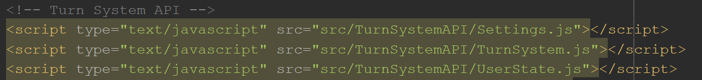
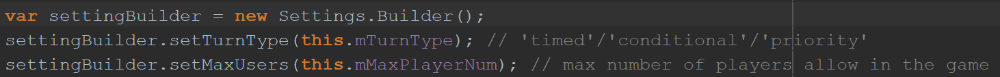
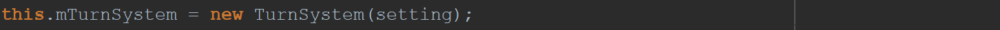
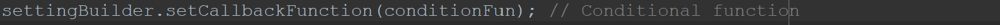
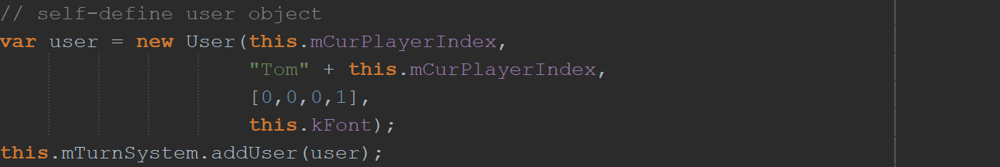
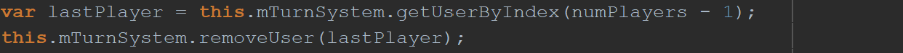
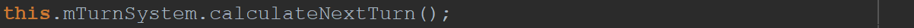

To get started on using the turn system, you must download the folder, locate the folder inside src folder, and include the API javascript files in the index.html in the project.
Add the following lines above you scene files in the index.html:

To initialize the turn system in the scene, you must have following parameters:
- turntype ('timed', 'conditional', 'priority')
- max number of player in the game.
Do the following 4 steps to initialize the turn system:
1. Construct the Setting.Builder class: 
2. Set parameters based on turn type (Description in later section)
3. Construct the Setting object using the Setting.Builder object:
4. Construct the TurnSystem object using the Setting object: 
To set the parameters for conditional turn-type, the developer must provide a conditional function to pass into the Setting.Builder object.
This function must return true to move onto the next player and return false to stay as current player's turn.
Set the conditional function by passing the function into Setting.Builder object: 
Tips: If the user object is extended from UserState, turn isMetCondition to true when condition is made. For condition function, pass a function that return isMetCondition. TurnSystem will reset isMetCondition when condition is true.
To add players, the developer can self-define a user object that extends from the UserState class and add the user object to the turn system. 
To remove a specific player, the developer can get the user object by index inside the TurnSystem storage. The developer should use some self-define parameters to locate specific user and then remove the user from the system by: 
To check if it is time to switch turns based on the turn type. Call the function to calculate if it is time to switch turn: 
| Function Names | Description | Parameter(s) (if any) | Return Type (if any) |
|---|---|---|---|
| Setting.Builder() | Constructor of the Setting.Builder class | None | None |
| setTurnType(type) | Set the turn-type to 'timed'/'conditional'/'priority' | type : string ('timed'/'conditional'/'priority') | None |
| setMaxUsers(max) | Set the max number of player. Minimum of 2 players | max : Number | None |
| setCallbackFunction(callback) | Set the callback function for 'conditional' or 'priority' turn-type | callback : function | None |
| setTurnTime(time) | Set the timer for 'timed' turn-type | time : Number | None |
| build() | Build and return the Setting object | None | Setting |
| Function Names | Description | Parameter(s) (if any) | Return Type (if any) |
|---|---|---|---|
| Setting(builder) | Constructor of the Setting class | builder : Setting.Builder | None |
| getTurnType() | Get the turn-type | None | String |
| getMaxUsers() | Get the max number of player | None | Number |
| getCallbackFunction() | Get the callback function for 'conditional' or 'priority' turn-type | None | Function |
| getTurnTime() | Get the timer for 'timed' turn-type | None | Number |
| Function Names | Description | Parameter(s) (if any) | Return Type (if any) |
|---|---|---|---|
| TurnSystem(settings) | Constructor of the TurnSystem class | settings : Setting | None |
| calculateNextTurn() | calculate if conditions are reached, if true, switch to next turn | None | None |
| maxOutTimeTicker() | Maxes out the time ticker to one update before the max | None | None |
| remainingTime() | Returns the remaining amount of time left before the timer reaches 0 | None | Number |
| getCurrentUser() | Returns the current user object | None | Developer defined User object |
| getNextUser() | Returns the user that immediately succeeds the current user | None | Developer defined User object |
| getUserByIndex(index) | Return the user at specific index | index : Number | Developer defined User object |
| getAllUsers() | Return the list of all users | None | List of developer defined User object |
| getNumUsers() | Return the number of users in the system | None | Number |
| addUser(user) | Returns true if the user passed in is successfully added. Otherwise, returns false. | user : Developer defined User object | Boolean |
| removeUser(user) | Returns true if the user passed in is successfully removed. Otherwise, returns false. | user : Developer defined User object | Boolean |